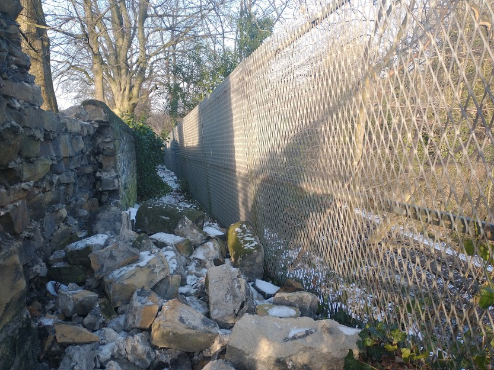
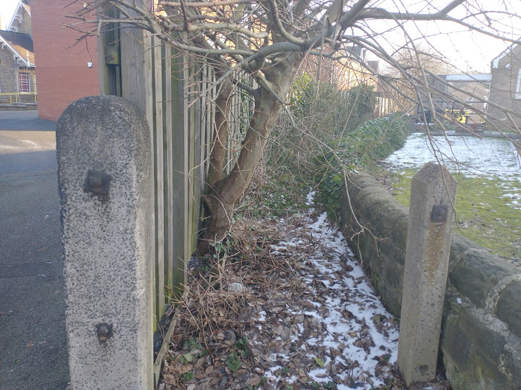
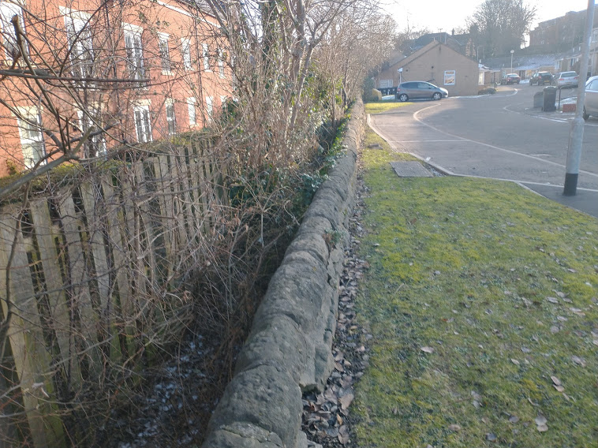
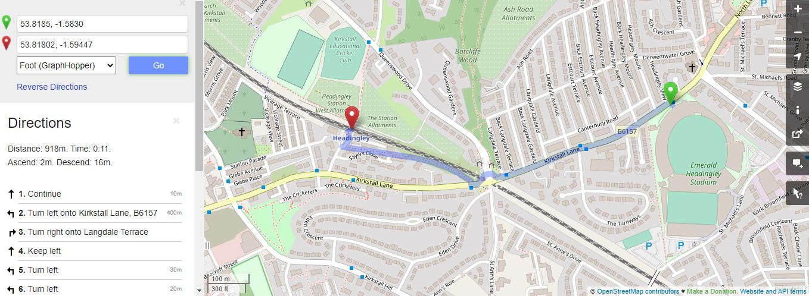
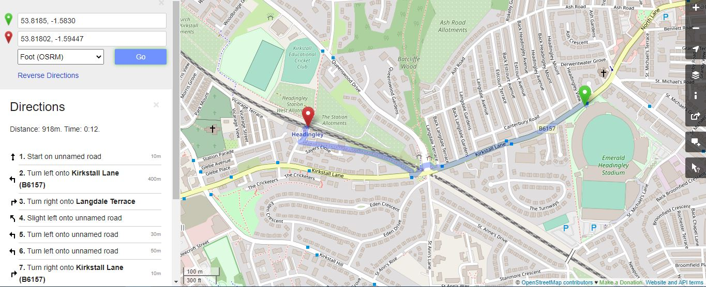

From the top of the ginnel just off Kirkstall Lane, looking towards the station. The rockfall from the wall may even imply that this path is dangerous to walk down.

From the station end of the ginnel.

From Sayers Close looking up the ginnel towards Kirkstall Lane.
Route planning software using OSM data (such as GraphHopper and OSRM) plot routes down this ginnel (for example from YCCC to Headingley Station) - which isn't ideal. 
Because this route is clearly infrequently used despite (just about) existing on the ground, and it isn't a public right of way (it doesn't appear on the latest Ordnance Survey Explorer map as a public right of way), I think it is reasonable to tag it as abandoned on OpenStreetMap. I am fairly confident nobody has walked down this path out of choice in the past year in order to get to/from Headingley station and Kirkstall Lane.